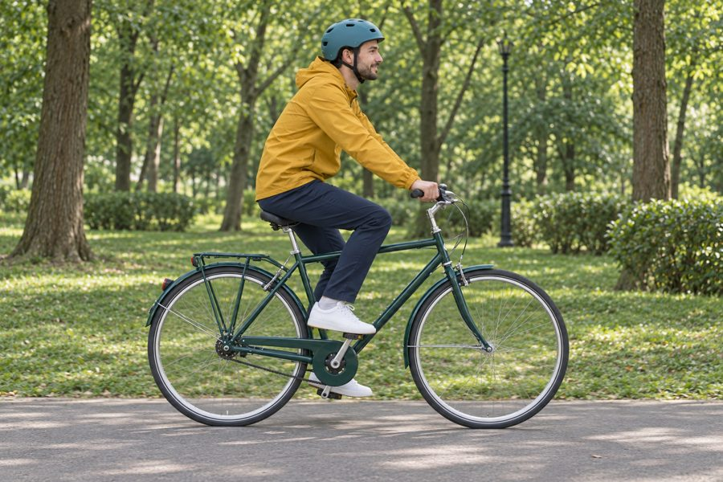
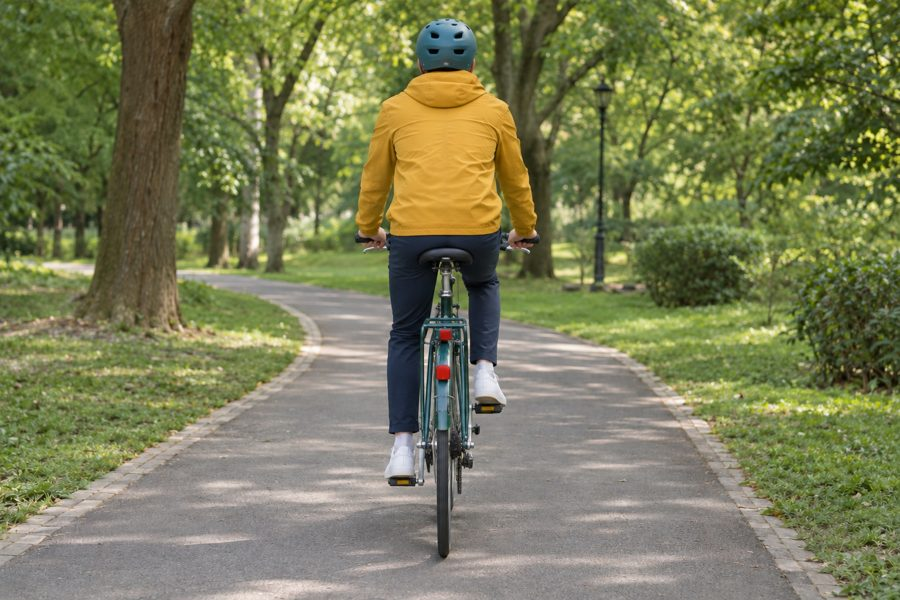

Types of Park Trails

Paved paths
Smooth asphalt loops are the best place to start. They are flat, wide, and shared with walkers, so keep your speed moderate and ring your bell before passing.
Gravel paths
Packed gravel adds a little challenge and a lot of quiet. Wider tires and lower tire pressure make the ride more comfortable.
Dirt trails
Hilly dirt trails are for mountain bikes. Check that the park allows cycling on them, and avoid riding after heavy rain to protect the trail surface.
Before You Ride

- Wear a helmet that fits snugly.
- Check tire pressure and brakes.
- Bring water and a small snack.
- Check the weather forecast.
- Carry a phone and a basic repair kit.
Tip: respect the park rules and stay on marked cycling paths. It protects you, other visitors, and the plants along the trail.